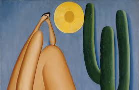
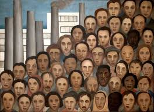

A arte brasileira teve início nas pinturas rupestres registradas nas cavernas, geralmente abordando fenômenos da natureza e animais da região. Os desenhos eram feitos com pigmentos minerais e vegetais, além de sangue de animais abatidos. Dentro da arte brasileira, essa é a primeira manifestação propriamente artística do homem, principalmente em grandes áreas geográficas, com desenhos em pedras e ossos.
Dessa maneira, os registros são fontes inesgotáveis de estudos e análises tanto do aspecto etnológico quanto estatístico e cronológico. Inclusive, as gravuras surgiram em regiões onde a natureza é hostil à ocupação humana, com figuras ricas e expressivas.
Um fato curioso: o Brasil detém os maiores sítios arqueológicos do mundo, sendo amplamente visitado por pesquisadores que estudam as figuras conhecidas como geométricas, astronômicas, simbolistas etc.
A Arte Moderna é o conjunto de expressões artísticas que surgiu na Europa no final do século XIX e perdurou até meados do século XX. No Brasil, essa corrente artística se consolidou com a Semana da Arte Moderna que ocorreu em 1922 no Teatro Municipal da cidade de São Paulo. Considera-se que a arte moderna teve seu declínio com o final da Segunda Guerra Mundial, dando lugar a outras correntes artísticas da arte contemporânea ou pós-moderna.
Tarsila de Aguiar do Amaral foi uma pintora, desenhista, escultora, ilustradora, cronista e tradutora brasileira. É considerada uma das principais artistas modernistas latino-americanas, além de ser considerada a pintora que melhor alcançou as aspirações brasileiras de expressão nacionalista nesse estilo artístico.
 Principais pintores brasleiros
Veja videos para aprender a pintar